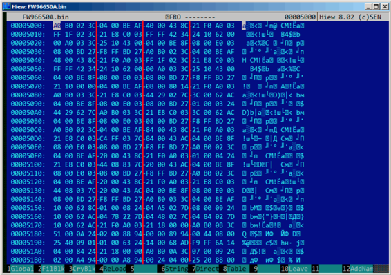

第63章
其他
63.1 基本思想
一个逆向工程师应该尽可能多地去尝试站在程序开发者的角度，并思考开发者碰见某些特殊情况会如何解决。
63.2 C++
RTTI(51.1.5)的数据对于C++类定义可能会有帮助。
63.3 某些二进制文件模式
有时我们可以在十六进制编辑器中清楚地看到16/32/64比特值的数组。下面是一个非常典型的MIPS代码。每一个MIPS(还有ARM或ARM64模式的ARM)指令都是32比特(4字节)，构成32比特值的数组。通过查看快照可以看到这种模式。为了显示更清晰我加了红色的下划线：

另一个这种模式的例子：第86节
63.4 内存快照比对
将两个内存快照直接比对来查看变化的技术常用于做8比特的PC游戏的高分游戏挂。
举个例子，如果你在8比特的电脑上加载了一个游戏(这里的内存不多，但游戏需要的内存通常更少)，假设你知道你现在有100发子弹，你可以给内存做个快照放到某处。然后打一发，子弹数变为99，然后再做一个快照进行比对：某处一定会有一个字节一开始是100，现在变成了99。考虑到这些8比特的游戏通常用汇编语言编写，并且这样的变量通常是全局变量，可以确定内存中确有某个地址包含了子弹数目。如果你在反汇编后的游戏代码中搜索了所有有关这个地址的引用，那么找到减少子弹数的代码并不难，然后使用NOP指令替换掉，这样在游戏里子弹数就会一直保持100。通常情况下8比特PC游戏加载地址不变，并且每个游戏的不同版本不多(通常一个版本就会流行很长一段时间)，所以游戏爱好者常常知道哪些地址的哪些字节需要覆盖(使用BASIC指令POKE)。由此形成了一个包含了POKE指令游戏挂，发布在和8比特游戏有关的杂志上。见:wikipedia
同样的，修改高分文件也很容易，并且不仅仅是处理8比特游戏了。记下你的得分数并且将文件备份。当高分变化后将两个文件进行比对，使用DOS的FC工具就可以(高分文件通常是二进制形式)。某处一定会有部分字节不同，发现哪些字节包含了得分数很容易。然而，游戏开发者为了防范这些游戏挂可能会采取一些措施。
这本书中其他类似的例子：第85节
63.4.1 Windows注册表
在程序安装前后比对注册表的变化也是可行的，常用于寻找与程序有关的注册表元素。这也可能是"windows registry cleaner"共享软件如此受欢迎的原因吧。
63.4.2 Blink-comparator
文件或内存快照的比对让我们想起了blink-comparator：一种曾被天文学家使用的设备，用于发现天体移动。blink-comparator允许在两个不同时间摄影快照间切换，便于天文学家发现差别。顺便说一句，冥王星就是在1930年用blink-comparator发现的。